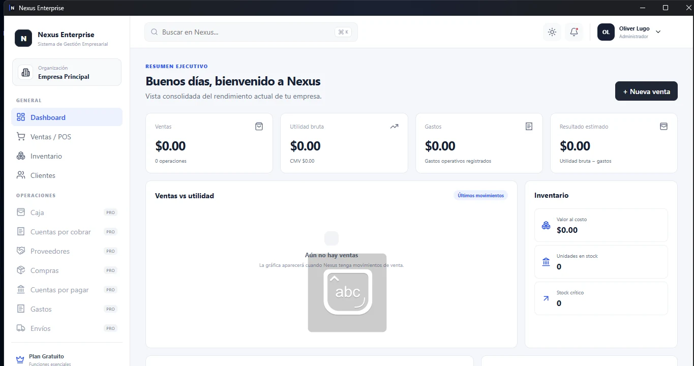

Ventas / POS
Carrito, clientes, pagos, costo histórico y utilidad real por operación.
Ventas, inventario, clientes, caja, cuentas, proveedores, marketing, rentabilidad, reportes y más dentro de un sistema de escritorio moderno.

Carrito, clientes, pagos, costo histórico y utilidad real por operación.
Stock, costo, alertas, productos y control visual.
Seguimiento, postventa, oportunidades y cuentas por cobrar.
Apertura, movimientos, gastos, cuentas por pagar y resultado estimado.
Promociones, campañas, publicaciones y rentabilidad promocional.
Ventas, utilidad, margen, inventario, clientes y rendimiento.
Descarga el instalador comercial y activa Premium cuando estés listo.